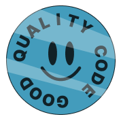

Je suis Arthur,
développeur
Je suis un développeur passionné, curieux qui aime apprendre et créer.
Hello ! üëã
Moi c'est Arthur.
J'ai 23 ans et je suis passioné d'informatique et de pleins d'autres choses. J'aime résoudre des problèmes et fournir un travail bien fait.
Bien qu'étant spécialisé dans le développement web, je suis polyvalent et je m'intéresse à beaucoup d'autres technologies.
Je fais des trucs
sur internet.
Découvrez trois de mes derniers projets. Certains sont des side projects et d'autres sont réalisés en Freelance pour mes clients.
